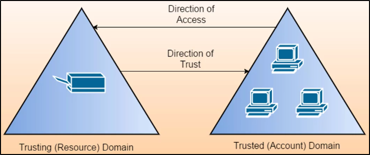

Trusts in Domain and Forests
In un ambiente di Active Directory, la trust è una relazione tra 2 domini o foreste,
la quale permette gli utenti di un dominio/foresta di accedere le risorse in un altro dominio/foresta.
La Trust può essere Automatica come ad esempio:- Trust Padre-Figlio
- Trust nella stessa foresta
Oppure la Trust può essere Stabilita: in questo caso la dichiaramo tra 2 elementi esterni.
Gli oggetti che rappresentano questa relazioni sono chiamati:
TDOs (Trusted Domain Objects)
Esistono diversi tipi di Trust, come sottocategorie di Automatic e Stabilità:
One-way trust:
Gli utenti possono accedere ad una risorsa su un domino o foresta,
ma non viceversa!
Ricorda bene: in questo caso la direzione di trust è opposta
alla direzione di accesso alle risorse!

Two-way trust:
In breve: Bidirezionale.
Utenti da ambo i domini possono accedere le risorse in ambo le direzioni

Trust transitiva:
Una Trust può essere estesa, per collegarsi ad altri domini.
Le relazioni default come Tree-Root e Parent-Child tra domini
della stessa foresta sono Trust transitive a 2 way
Altrimenti, esistono Trust non transitive.
Queste non permettono di essere estese agli stessi domini nella foresta.
Questo è il tipo di Trust di default tra 2 domini di 2 foreste separate,
le quali foreste non hanno una Trust tra di loro

Altri tipi di Trust sono quelle automatiche.
Parent-Child è una di queste.
Ad esempio, se a.b.c è figlio del dominio b.c, allora
tra loro due vi è una Trust transitiva a 2 way
Altra comune è Tree-root.
Si crea automaticamente quando un tree viene aggiunto
ad una root di una foresta.
Anche questa è una Trust transitiva a 2 way

Altro tipo di Trust è un Trust Shortcut.
Sono usate per ridurre i tempi di accesso in scenario di Trusts complicati.
Può essere one-way o two-way

Ultimo tipo di trust abbiamo l'External Trust.
E' un tipo di trust tra 2 domini di due foreste separate,
dove le 2 foreste non hanno nessun tipo di trust tra di loro.
NON E' transitiva.
Può essere one-way o two-way.

Trust molto conosciuto è il Forest Trust.
E' un tipo di Trust tra root di foreste.
Non può essere esteso ad una 3a foresta (niente trust implicita)
Può essere transitiva o intransitiva, one-way o two-way.
Ad esempio, nell'immagine:
Non è detto che la 1 foresta abbia una Trust relationship con la 3!

Ottieni tutte le Domain Trust per il dominio corrente:


Per ADModule, puo inserire "*" nel filtro per ottenere tutto:

Ottieni dei dettagli riguardo la foresta corrente:


Ottieni i domini della foresta corrente:


Forest Mapping
Cosa sono i Global Catalog?
E' un servizio offerto dai Domain Controller, i quali permettono di mostrare
informazioni su tutti gli oggetti della foresta,
a prescindere se l'oggetto appartenga al domini del Domain Controller
https://stealthbits.com/blog/what-is-a-global-catalog-server/
Ottieni tutti i cataloghi globali per la foresta corrente:

Mappa tutte le Trust di una foresta:

Trova le macchine nel dominio corrente, dove l'utente corrente ha privilegi da Local Admin.
Questo comando fa una query sul DC del dominio corrente/provvisto,
chiedendo una lista di computers (Get-NetComputers)
ed invoca su ogni macchina in modo multithreaded
Invoke-CheckLocalAdminAccess su ogni macchina
NB: E' decisamente più noisy di altri tipi di enumerazione, quindi fai attenzione!


Quest'azione può essere effettuata anche con WMI e PowerShell remoting.
Molto utile in caso porte, come RPC ed SMB, sfruttate da Find-LocalAdminAccess
sono bloccate
https://github.com/gangstanthony/PowerShell/blob/master/Get-LocalAdmin.ps1
Basta passargli una lista di computer e controllerà gli amministratori della macchina


26:28
Trova tutti gli admin locali per le macchine del dominio
(necessita dei permessi di amministratore sulle altre macchine non-DC)
Questo comando fa una query sul DC del dominio corrente/provvisto,
chiedendo una lista di computers (Get-NetComputer)
ed invoca su ogni macchina in modo multithreaded
Get-NetLocalGroup su ogni macchina


Trova computers dove il Domain Admin (o un utente/gruppo) ha una sessione:
Comodo per trovare sessioni e login dove abbiamo token admin di login o sessione

Per confermare l'accesso admin:

Questa Invoke fa cosi:
Interroga il DC del dominio corrente o specificato, per un membro
di un gruppo specificato (di default: Domain Admins) usano Get-NetGroupMembers,
ottiene una lista di computers con Get-NetComputer,
e la lista di sessioni e logged sugli utenti scelti, usando (Get-NetSession e Get-NetLoggedon)